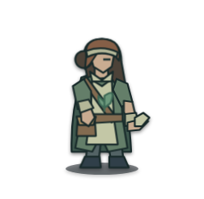

原生SVG动作
静态结算姿态。
900毫秒是演出节奏。手臂与叶纹采用同一动作时钟，脚底保持锚点。
第137次真实出征，露弥施放「草药救护」：原记录161 → 162，实际恢复29，未生效24。手边叶纹只表示已记录的直接救护，不是额外治疗，也不代表目标当前生命。
这是固定样片，不替代刚才的报告。正式回放使用当前步的原生SVG；此页冻结v189模型、样式与来源。
静态结算姿态。
900毫秒是演出节奏。手臂与叶纹采用同一动作时钟，脚底保持锚点。

尚未加载GIF。
八个真实SVG时点本地编码，循环900毫秒；不是直接GIF生成或新imagegen。GIF为256色和二值透明，PNG帧表保留完整RGBA；不能精确暂停GIF某帧。
SVG 6574字节，PNG 27263字节，受控渲染RGBA逐字相同。12个本地加载/解码样本不代表弱网、真机、帧率或整站性能。
播放需要点击；减少动态时保留静态。此页不读写公会、准备或奖励。